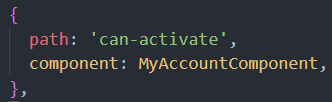
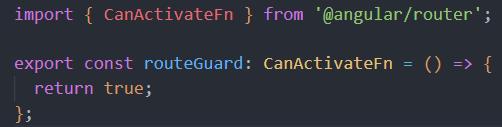
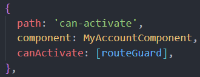
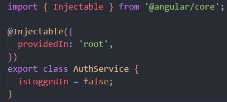

Private Account Details Displayed Here!!!
What's going on here?
- Notice the confirmation popup that appeared when you clicked this section
- That is the CanActivateFn at work, protecting this route/endpoint
- If you do not 'login', then you cannot enter, this example lacks real world authentication with a backend, but is meant to simply show how this route guard works
- First, we create the component and route that we'd like to protect, here we have a 'private account details component' that you are currently viewing
- In our app-routing.module.ts, we set up the route to this component 
- Currently, anybody can enter this endpoint and view this component
- Now, we create a guard with the CanActivateFn (function), this is newer than the now deprecated CanActivate interface 
- Back to our app-routing.module.ts, lets add this guard to our route, we will need to import it at the top of the file 
- The CanActivateFn is performed before navigation to the route. This function returns a boolean, an observable, or promise that resolves to a boolean value
- Routing to the endpoint will now only be successful if the CanActivateFn returns true
- In a real world example, we will likely use a service to check if a user is authenticated to decide whether we should return true or false in the CanActivateFn
- Lets create this service now 
- We're keeping it super simple, with one single property 'isLoggedIn' that we will manipulate in our CanActivateFn
- When trying to access this route, we want to prompt the user to login, if they confirm, we allow them to view the page, if they cancel, we do not let them view the page
- Lets go back to our routeGuard and implement this logic
- Before, we would be working with a class that implements the CanActivate interface and its method, we would use the constructor to inject our service (to check if a user is logged in)
- Since CanActivate is now deprecated, CanActivateFn is now just a function. We must import and use Inject() to access our service
- In a real world application, we might use local storage to remember if a user is logged in, in our example, we will be prompted endlessly on every re-visit or page reload